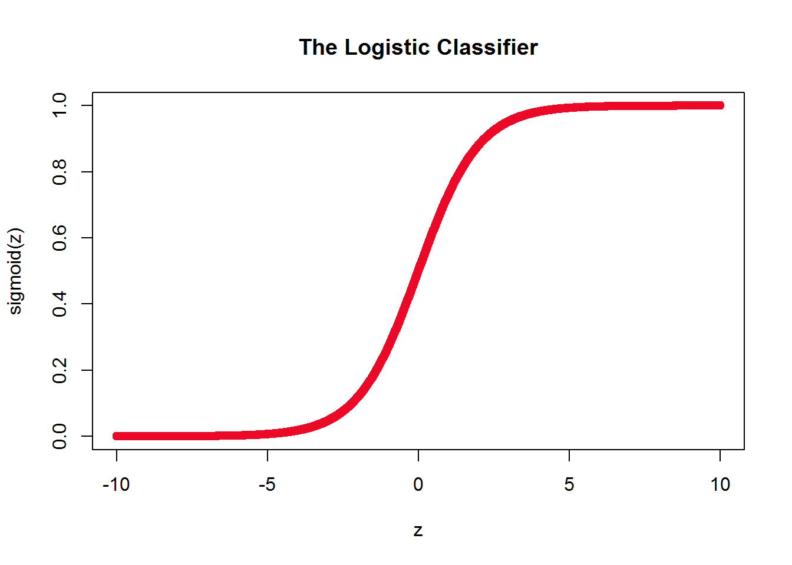
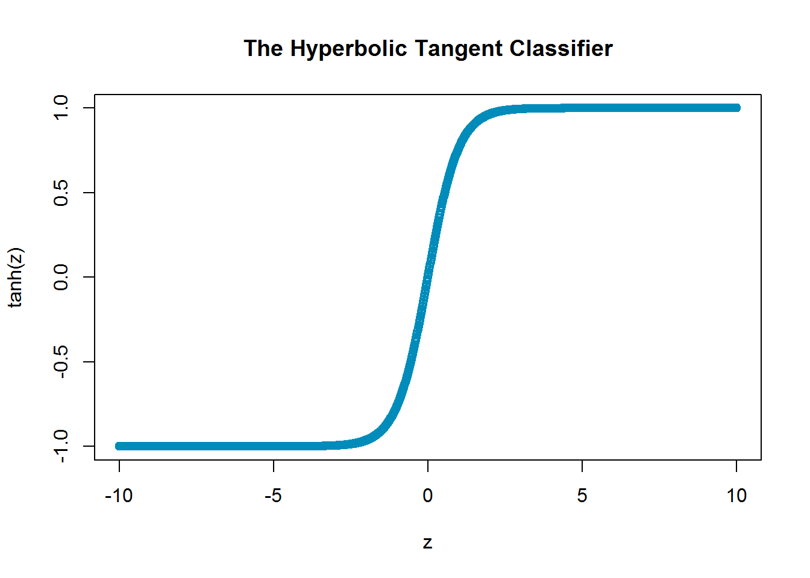

Logistic Regression is the prediction of a class, denoted by \(\hat{y}\), given a set of input features and their corresponding targets \(x^{(i)}, y^{(i)}\), despite the naming, Logistic Regression is a classification algorithm.
It typically uses the Sigmoid function for this classification. The Sigmoid function is fairly simple, it is characteristic of having an ‘S’-shape curve, and there are many variations of this function.
The Logistic variation of the Sigmoid function is defined mathematically below:
\[z = w^T X\] \[\sigma(z) = \frac{e^z}{1 + e^{z}} = \frac{1}{1 + e^{-z}}\] \[p(y = 1 | x) = \sigma(w^{T} X)\]
And the probability that \(y = 1\) given \(x\) is equal to \(\sigma(z)\), where \(z\) is the weights matrix transposed \(w^T\), times \(X\), the matrix of input data.
sigmoid <- function(z) {
1 / (1 + exp(-z))
}
z <- seq(-10, 10, 0.01)
plot(z, sigmoid(z), col = "#ec0928")
title("The Logistic Classifier")
Suppose you are trying to classify books into Horror and Sci-Fi classes, with Horror represented by the value \(y = 0\) and Sci-Fi represented by \(y = 1\).
If you take a look at the previous plot, you can see that:
\[ \begin{aligned} \sigma(-10) &\approx 0 \\ \sigma(0) &= 0.5 \\ \sigma(10) &\approx 1 \\ \end{aligned} \]
The value that \(\sigma(z)\) returns is a probability value, which we can use for our classification:
Which indicates that:
The Hyperbolic Tangent, like the Logistic function is a variation of the Sigmoid function, and like the Logistic function, it is passed \(z\):
\[ \begin{aligned} z &= w^T X \\ tanh(z) &= 2\sigma(2z) - 1 \\ tanh(z) &= \frac{e^z - e^{-z}}{e^z + e^{-z}} \\ \end{aligned} \]
sigmoid <- function(z) {
1 / (1 + exp(-z))
}
tanh <- function(z) {
2*sigmoid(2*z) - 1
}
z <- seq(-10, 10, 0.01)
plot(z, tanh(z), col = "#008CBA")
title("The Hyperbolic Tangent Classifier")
And hence prediction probabilities are also made according to the value that the Hyperbolic Tangent function returns, however there is one slight-but-important change:
This time to represent Horror and Sci-Fi, we will use \(y = \left\{-1, 1\right\}\), respectively, instead of \(y= \left\{0, 1\right\}\).
\[ \begin{aligned} \tanh(-10) &\approx -1 \\ \tanh(0) &= 0.5 \\ \tanh(10) &\approx 1 \\ \end{aligned} \]
From the previous plot:
For the Logistic Classifier:
For the Hyperbolic Tangent Classifier:
Copyright © 2017 AeonTech, Inc. All rights reserved.